周志 2026/11/10
1. 统一电流归一化
过去每个样本用自身 PO 电流的平均幅值确定缩放系数。记三角元的 PO、MoM 复电流为 $J_{\mathrm{PO}}$、$J_{\mathrm{MoM}}$，将实部和虚部按三个笛卡尔分量展开为 6 维向量，则旧方案为
现改为全样本共用自由空间波阻抗 $\eta_0=376.730313668\ \Omega$：
几何、边、聚类和入射角数据不变；这次只改变电流的数值尺度。因此旧、新数据集上的 MSE loss 不能直接横向比较，物理电流的相对误差可以按同一口径比较。
2. 入射支路
V7 在每个 G0 三角元构造 14 维入射特征：传播方向 $\hat{k}$ 的 3 维、$\hat{k}\otimes n_i$ 的 9 维，以及 $\cos(k_0\hat{k}\cdot c_i)$、$\sin(k_0\hat{k}\cdot c_i)$ 的 2 维。其中 $c_i$ 为中心、$n_i$ 为法向。特征经 14 -> 128 -> 128 -> 512 的 ReLU MLP，拆成两个 256 维调制量 $\gamma_{\rm src},\beta_{\rm src}$。PO 电流编码得到 $h_i\in\mathbb R^{256}$ 后，执行
这里 $\odot$ 是逐元素相乘（$(a_x,a_y,a_z)\odot(b_x,b_y,b_z)=(a_xb_x,a_xb_y,a_xb_z, a_yb_x,a_yb_y,a_yb_z, a_zb_x,a_zb_y,a_zb_z)$）；它让入射方向、表面朝向和相位在进入局部信息交流前作用于 PO 特征。最后一层零初始化，使训练起点不受新支路扰动。
3. 几何支路
每个 G0 节点的 10 维输入为：中心坐标 3 维、法向 3 维、面积 1 维、G0 邻域及所属 G1/G2 簇邻域的法向变化各 1 维。邻域变化用 $1-n_i\cdot n_j$ 在几何边上取平均；G1/G2 的统计值再广播回各自的 G0 子节点。此设计使节点获得局部及较粗尺度的几何转折信息。
几何输入经 10 -> 128 -> 128 -> 512 的 ReLU MLP，也拆成 $\gamma_{\rm geo},\beta_{\rm geo}\in\mathbb R^{256}$，在入射支路之后执行
几何支路同样采用零初始化输出层。两条支路仅在主干入口各注入一次，不在每轮 MGTransformer 中重复注入。
4. 建立几何缓存层
V7 新增不含可学习参数的 Geo_cache，在每个样本的单次前向传播内先计算与当前网络特征无关的几何量，再供重复的 MGTransformer 和局部交流使用：
- G0 几何边的双向索引、中心位移 $\rho_{ij}$、距离 $R_{ij}$ 和目标节点的邻居数。
- G1/G2 簇的面积总和、面积加权中心与法向，以及两层耦合边的双向索引。
- G1/G2 耦合边上的复标量 Green 核 $G_{ij}=e^{-jk_0R_{ij}}/(4\pi R_{ij})$，拆为实部、虚部供注意力偏置使用；另按 $\nabla G_{ij}=G_{ij}(-jk_0-1/R_{ij})\hat r_{ij}$ 形成 6 维实/虚梯度量，供 CoupleExchange 使用。
这样固定的距离、核函数和簇几何不必在 MG_num=4 的每轮主干调用中重复求值。缓存不是跨样本或跨 epoch 持久保存，而是一次前向计算、同次前向复用。
5. 五个 Case 的 V6/V7 重训
序号 9：旧归一化、旧网络 V6。序号 11：统一 $\eta_0$ 归一化、旧网络 V6。序号 12：相同 $\eta_0$ 数据集、新网络 V7（入射与几何支路）。三次均为 MG_num=4，使用各自最佳 checkpoint。每格为 train / val，越小越好。
归一化 MSE loss（序号 9 与 11/12 的尺度不同，不能直接比较）：
| 序号 | Case 1 | Case 2 | Case 3 | Case 4 | Case 5 | 平均 |
|---|---|---|---|---|---|---|
| 9 · V6，旧归一化 | 0.04625 / 0.13624 | 0.05960 / 0.17331 | 0.03895 / 0.10315 | 0.06664 / 0.19737 | 0.04865 / 0.13852 | 0.05202 / 0.14972 |
| 11 · V6，eta | 0.02904 / 0.06076 | 0.03310 / 0.06604 | 0.02513 / 0.05117 | 0.03216 / 0.07282 | 0.02704 / 0.05606 | 0.02929 / 0.06137 |
| 12 · V7，eta | 0.00545 / 0.02793 | 0.00706 / 0.03033 | 0.00469 / 0.02227 | 0.00725 / 0.04957 | 0.00583 / 0.03307 | 0.00605 / 0.03264 |
复电流相对误差，$\|\hat J-J_{\rm MoM}\|_F/\|J_{\rm MoM}\|_F\times100\%$；每角度先算误差，再按 case 等权平均：
| 序号 | Case 1 | Case 2 | Case 3 | Case 4 | Case 5 | 平均 |
|---|---|---|---|---|---|---|
| PO 基线 | 74.77 / 75.11 | 78.89 / 78.93 | 78.09 / 77.40 | 78.15 / 78.06 | 71.36 / 71.28 | 76.25 / 76.16 |
| 9 · V6，旧归一化 | 23.73 / 38.76 | 24.98 / 41.76 | 21.07 / 34.43 | 25.31 / 42.95 | 25.32 / 41.80 | 24.08 / 39.94 |
| 11 · V6，eta | 27.59 / 39.08 | 28.78 / 40.55 | 24.86 / 35.64 | 30.25 / 45.37 | 28.62 / 41.23 | 28.02 / 40.38 |
| 12 · V7，eta | 11.94 / 25.50 | 13.23 / 27.48 | 10.74 / 23.23 | 14.37 / 37.18 | 13.26 / 31.60 | 12.71 / 29.00 |
序号 12 的五个 case 均有改善：平均验证相对误差从序号 11 的 40.38% 降至 29.00%，较旧归一化 V6 的 39.94% 也低 10.94 个百分点。这个结果表明 V7 整体方案有效。
6. 单站 RCS 指标
新增 $\theta=45^\circ$、$\phi=0^\circ,10^\circ,\ldots,170^\circ$ 的单站 RCS 曲线，以 MoM 为参照检查预测远场。Case 1 的 18 角度 dBsm RMSE：单次 PO 19.08 dB，V7 预测 0.28 dB。完全未参与训练的 case_single 上，单次 PO 为 24.82 dB，V7 预测为 4.34 dB；FEKO 二、三次反射 PO 分别约为 4.18 dB、4.05 dB。因此新几何上的 V7 预测明显优于单次 PO，但与多次反射 PO 大体接近、略逊于后者。
Case 1：单次 PO、MoM 与 V7 预测。
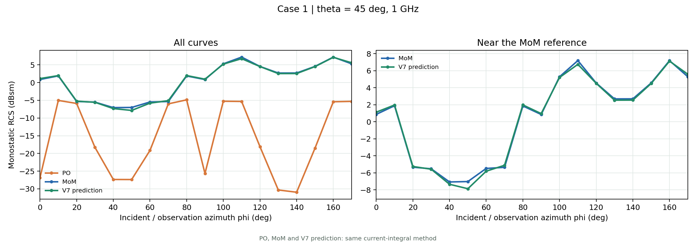
Case single：单次 PO、二/三次反射 PO、MoM 与 V7 预测。
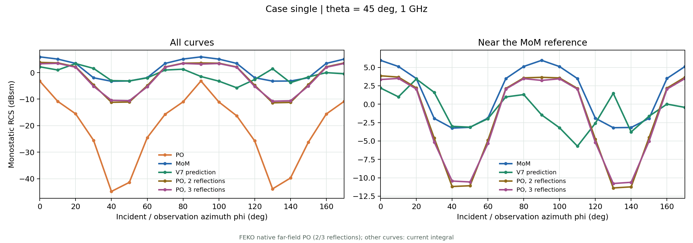
图中 PO、MoM、预测曲线由同一套三角元复电流积分计算；case_single 的二、三次反射 PO 曲线是 FEKO 直接导出的远场。后两者与电流积分曲线的 RMSE 只用于观察趋势，严格定量比较还需统一远场计算口径。单站结果也不能单独替代电流和其他观察角的评价。
7. 直接关闭通路的消融
固定序号 12 已训练的 V7 权重，不重新训练，只在前向时分别关闭入射、几何、G1/G2 BiasTransformer 或 CoupleExchange。表中是复电流相对误差百分比，仍按 train / val 展示。
| 序号 | 关闭的内容 | Case 1 | Case 2 | Case 3 | Case 4 | Case 5 | 平均 |
|---|---|---|---|---|---|---|---|
| 12 | 无 | 11.94 / 25.50 | 13.23 / 27.48 | 10.74 / 23.23 | 14.37 / 37.18 | 13.26 / 31.60 | 12.71 / 29.00 |
| 13 | 几何支路 | 72.63 / 73.12 | 75.15 / 74.95 | 71.79 / 71.72 | 86.79 / 87.69 | 73.95 / 72.94 | 76.06 / 76.08 |
| 14 | 入射支路 | 61.58 / 63.71 | 61.75 / 62.71 | 60.30 / 64.13 | 69.06 / 68.92 | 58.50 / 59.19 | 62.24 / 63.73 |
| 15 | G1/G2 BiasTransformer | 77.00 / 78.54 | 82.14 / 83.41 | 79.53 / 79.29 | 78.62 / 81.88 | 79.04 / 79.34 | 79.27 / 80.49 |
| 16 | G1/G2 CoupleExchange | 63.17 / 64.30 | 76.82 / 77.33 | 66.92 / 66.52 | 75.42 / 76.93 | 63.85 / 64.62 | 69.23 / 69.94 |
两组消融（入射/几何支路、MG 内的两条交流支路）表明 当前已训练权重依赖这些通路。这不是从头训练的架构比较：关闭通路后若继续训练，loss 或 error 能否降回去，仍需另做实验。
8. 扩充角度仿真
开始以五个 case 和 case_single 扩充入射角：$\theta=10^\circ:5^\circ:90^\circ$、$\phi=0^\circ:5^\circ:180^\circ$，每个几何共 629 组方向，分别求解配对的 MoM 与 PO 电流。当前仍在工作站仿真阶段；尚未将未完成的输出构建为新 dataset，角度及几何划分将在原始数据齐备后另行确定。
周志 2026/11/17
1. 全角度训练
五个固定几何采用 1 GHz、同一极化和统一 $\eta_0$ 归一化；每几何有 $\theta=10^\circ:5^\circ:90^\circ$、$\phi=0^\circ:5^\circ:180^\circ$ 的 629 个方向。训练 V7 使用 MG_num=4，预测 MoM 相对 PO 的六维复电流修正量。
| 用途 | 方向划分 | 每几何 | 五几何合计 |
|---|---|---|---|
| 训练 | $\theta=10^\circ:10^\circ:90^\circ$；$\phi=0^\circ:10^\circ:180^\circ$ | 171 | 855 |
| 验证 | $\theta\in\{15^\circ,35^\circ,65^\circ,85^\circ\}$；$\phi\in\{15^\circ,45^\circ,75^\circ,105^\circ,135^\circ,165^\circ\}$ | 24 | 120 |
| 其余方向 | 不进入此次训练或验证的方向 | 434 | 2170 |
| 最佳 epoch | 当轮 train MSE | 最佳 val MSE | 末轮 train / val MSE | 复电流相对 error |
|---|---|---|---|---|
| 204 | 0.001554014 | 0.01475297 | 0.001094989 / 0.01486498（第 464 轮） | record 尚未给出该训练/验证集的复算值 |
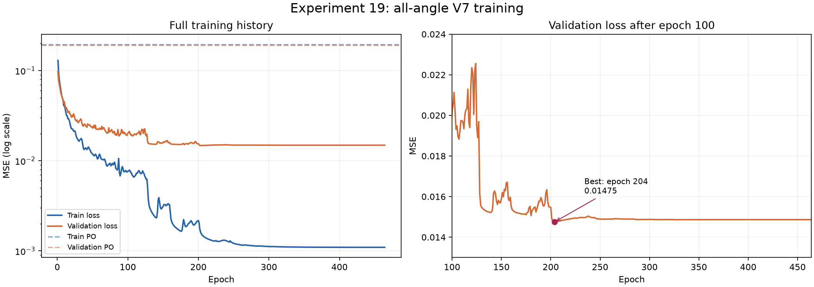
数据与数值沿用 record.md 的“全角度数据集训练”和“序号19”记录。未用 MSE 推算电流相对 error。
2. 多变体训练
五个 CAD 族各有 20 个参数变体，共 100 个几何。每个几何在 1 GHz、同一极化和 $\eta_0$ 归一化下仿真 93 个方向。文件名中首个 X/V/C 表示几何组，末尾 X/V/C 表示角度组，例如 datasetXVXA 是训练几何的训练角度。
| 维度 | X：训练组 | V：验证组 | C：留出组 |
|---|---|---|---|
| 几何变体（每个 CAD 族） | 01–12，共 12 个 | 13–15，共 3 个 | 16–20，共 5 个 |
| 入射方向（每个变体） | $\theta\in\{35^\circ,45^\circ,55^\circ\}$，$\phi=0^\circ:10^\circ:180^\circ$，57 个 | $\theta\in\{40^\circ,50^\circ\}$，$\phi=5^\circ:10^\circ:85^\circ$，18 个 | $\theta\in\{40^\circ,50^\circ\}$，$\phi=95^\circ:10^\circ:175^\circ$，18 个 |
| 训练用途 | 数据集 | 样本数 | 说明 |
|---|---|---|---|
| 训练 | datasetXVXA.pt |
3420 | 60 个 X 几何 × 57 个 X 角度 |
| 验证选参 | datasetVVVA.pt |
270 | 15 个 V 几何 × 18 个 V 角度 |
| 验证选参 | datasetVVCA.pt |
270 | 15 个 V 几何 × 18 个 C 角度 |
trainV7A.py 从全角度最佳参数初始化。下表的 error 使用完整复电流，先逐样本计算相对 Frobenius 范数，再对样本取平均；loss 是归一化修正量 MSE。数值取自 record.md 的“多变体 V7comb”记录。
| 数据 | PO 相对 error | V7comb 预测相对 error | 修正量 MSE |
|---|---|---|---|
| VVVA（270 样本） | 72.04% | 30.18% | 0.038463847 |
| VVCA（270 样本） | 71.86% | 30.20% | 0.038410645 |
| 合并验证集（540 样本） | 71.95% | 30.19% | 0.038437246 |
最佳 checkpoint 在第 100 轮，训练 MSE 为 0.004052070，最佳验证 MSE 为 0.038437246。VVCA 已用于选参，不能作为独立最终测试集；训练集的复电流相对 error 尚未复算。两次训练的数据分布不同，不能把 loss 当作同一验证集直接比较。

3. SLICY 泛化尝试
另对未纳入上述五族变体训练的 SLICY 几何进行了纯推理测试。SLICY 数据集是 1 GHz、74,762 个三角元、$\theta=45^\circ$、$\phi=0^\circ:10^\circ:180^\circ$ 共 19 个方向，使用相同的 $\eta_0$ 归一化。页面中的电流着色采用三个笛卡尔实部分量的范数 $\|\operatorname{Re}J\|_2$；电流相对误差则使用完整六维复电流。该测试与五族变体的角度/几何划分不同，应单列为新几何泛化观察。
V7comb 第 100 轮最佳参数在这 19 个方向上的逐样本平均相对误差为 53.12%，同批样本 PO 基线为 65.03%。此结果是 SLICY 的独立几何测试，并不等于对全部新 CAD 族的泛化结论。
单站 RCS 以这 19 个方向的电流积分 MoM 曲线为参照，在 dBsm 上计算 RMSE：PO 为 17.21 dB，V7comb 预测为 3.82 dB，FEKO 二次反射为 3.66 dB。预测相对 PO 降低 13.40 dB（约 77.83%）；二次反射比预测再低 0.16 dB。PO、MoM 和预测曲线由三角元复电流远场积分估算，二次反射曲线来自 FEKO 原生远场，因此后者主要用于趋势比较，不能视为完全统一计算口径下的严格误差对照。
完整对比：PO、MoM、V7comb 预测与 FEKO 二次反射。

重点对比：去除 PO 后比较 MoM、V7comb 预测与 FEKO 二次反射。

4. 飞机泛化尝试
使用同一个 V7comb 第 100 轮最佳 checkpoint，对训练和验证均未出现过的飞机几何进行纯推理。数据为 1 GHz、12,606 个三角元，固定 $\theta=45^\circ$，$\phi=0^\circ:10^\circ:180^\circ$ 共 19 个方向。电流 error 使用完整复电流的相对 L2 范数，19 个方向逐样本计算后取平均。
飞机上的 PO 平均相对 error 为 64.39%，V7comb 预测为 70.77%，比 PO 反而高 6.38 个百分点，说明模型没有正确恢复该几何上的复电流修正量。单站 RCS 以 MoM 为参照的 RMSE 从 PO 的 8.05 dB 降至预测的 5.78 dB，降低 2.27 dB（约 28.19%），但远场积分指标的局部改善不能替代完整电流误差。综合判断，这次飞机泛化结果比较失败。

5. single 泛化尝试
同一 V7comb checkpoint 也用于新的 case_single 数据。该数据为 1 GHz、12,120 个三角元，固定 $\theta=45^\circ$，$\phi=0^\circ:10^\circ:180^\circ$ 共 19 个方向；它没有参与 V7comb 的训练或验证，误差口径与飞机测试相同。
case_single 上的 PO 平均相对 error 为 69.30%，V7comb 预测降至 25.03%，降低 44.26 个百分点（相对降低约 63.88%）。单站 RCS RMSE 也由 PO 的 24.26 dB 降至预测的 1.48 dB，降低 22.78 dB（约 93.89%）。完整复电流与单站 RCS 两项指标均显著改善，因此这次 single 泛化结果比较成功。
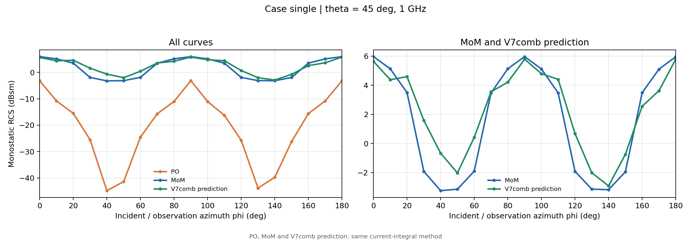
上述飞机与 single 图中的 PO、MoM 和预测曲线均由三角元复电流进行远场积分估算，不是 FEKO 原生远场文件；因此这里只在相同积分口径下比较三条曲线。
周志 2026/11/24
1. 三个简单模型的迁移训练与 SLICY 验证
以 V7comb 最佳参数为起点，加入 LayerCircle、LayerCylinder、ThreeAngle 三个简单几何，与五个原有 CAD 族的训练变体组成 8 个训练几何进行迁移训练，如图所示。每个几何均为 1 GHz、$\theta=45^\circ$、$\phi=0^\circ:10^\circ:180^\circ$ 的 19 个方向，训练集共 152 个样本。
迁移训练中的 8 个几何
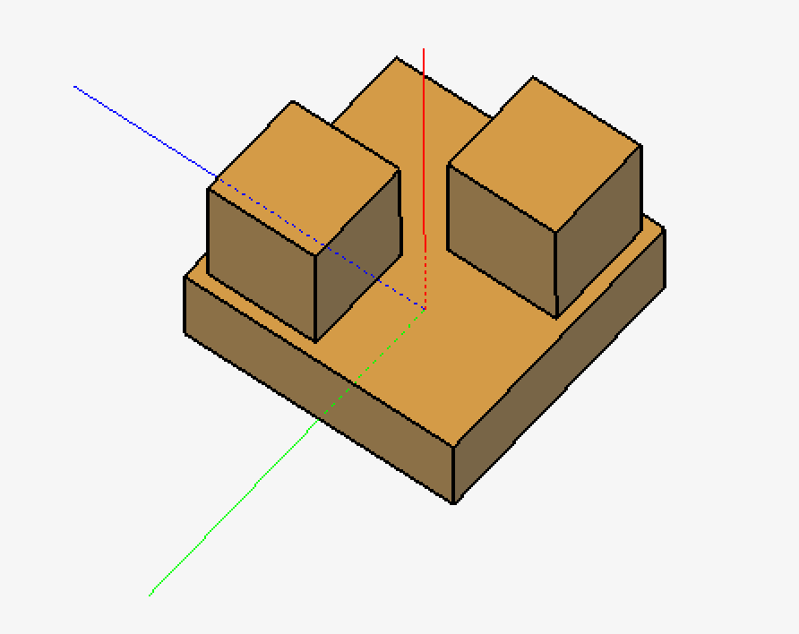 case1 |
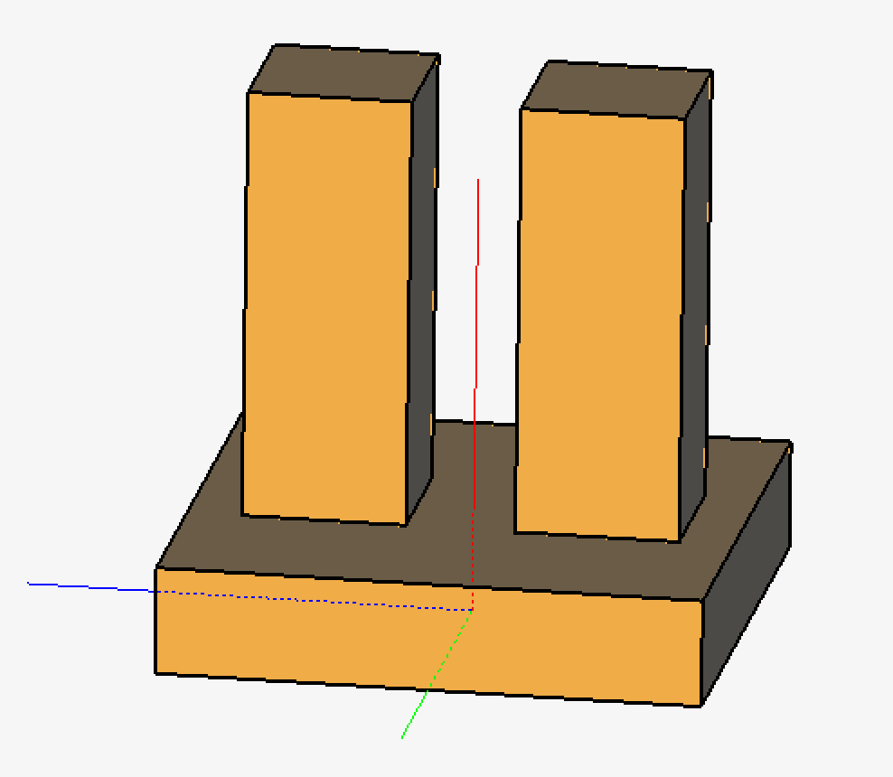 case2 |
 case3 |
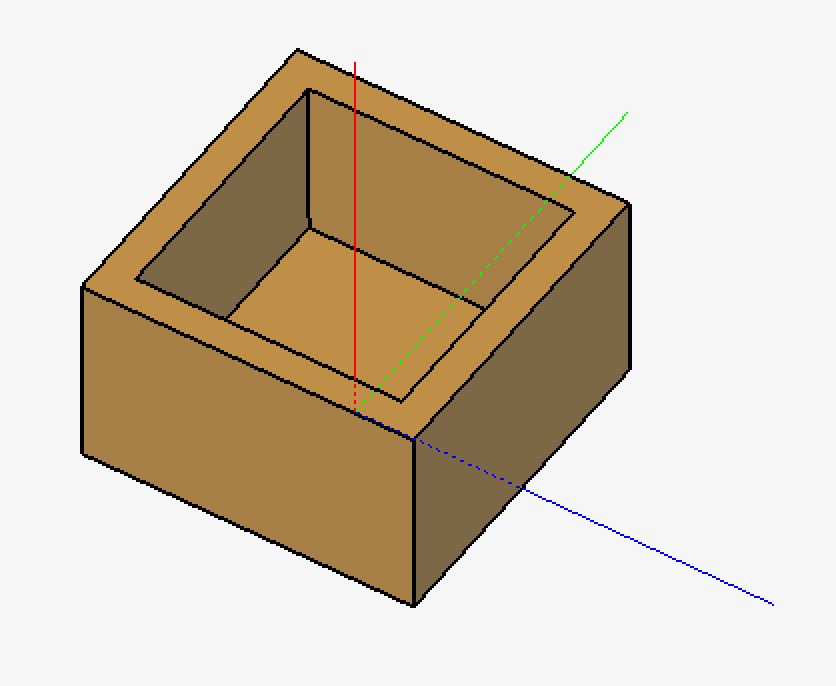 case4 |
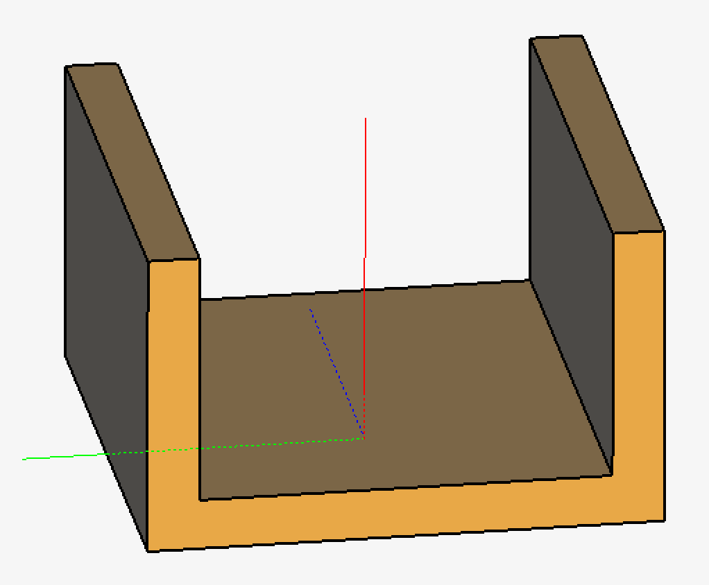 case5 |
 LayerCircle |
 LayerCylinder |
 ThreeAngle |
| 训练起点 | 新增训练几何 | 训练样本 | 验证与选参 | 最佳 epoch | 当轮 train / val 修正量 MSE |
|---|---|---|---|---|---|
| V7comb 最佳参数 | LayerCircle、LayerCylinder、ThreeAngle | 8 几何 × 19 方向 = 152 | SLICY，19 方向 | 18 | 0.009177404 / 0.048993025 |
同一批 SLICY 数据有 74,762 个三角元。完整复电流相对误差先按方向计算，再对 19 个方向等权平均。单站 RCS RMSE 在 19 个 dBsm 点上以 MoM 为参照计算。
| 方法 | 平均复电流相对误差 | 单站 RCS RMSE |
|---|---|---|
| PO | 65.03% | 17.21 dB |
| V7comb | 53.12% | 3.82 dB |
| addTrain | 37.35% | 4.02 dB |
2. caseOther 新几何泛化观察
在 caseOther 新建九个与 V7comb、addTrain 训练及验证选参均无关的几何，分别以两份最佳参数纯推理。每个目标在 1 GHz、相同极化和 $\eta_0$ 归一化下，采用 $\theta=45^\circ$、$\phi=0^\circ:10^\circ:180^\circ$ 共 19 个方向。Satellite2 是原 satellite 目录改名后的同一几何；PlaneF22 是当前约 2.45 m 长的缩比网格。这些是陆续完成的泛化尝试，尚非预先封存的最终测试集。
下表电流误差是每方向完整复电流相对 L2 误差的平均值；RCS 是相对 MoM 的 19 点 dBsm RMSE，全部由三角元电流积分估算。两项均越低越好。✘ 表示 V7comb 或 addTrain 至少有一项总体指标高于 PO；其余目标两份模型的两项总体指标均低于 PO。个别方向的退化仍可存在，详见 record.md“序号22”。
| 序号 | 目标 | PO 电流误差 | V7comb 电流误差 | addTrain 电流误差 | PO RCS RMSE | V7comb RCS RMSE | addTrain RCS RMSE |
|---|---|---|---|---|---|---|---|
| 1 | CombFlare | 65.78% | 47.80% | 42.22% | 12.98 dB | 2.77 dB | 3.30 dB |
| 2 | Satellite2 | 57.14% | 51.99% | 47.12% | 11.61 dB | 8.16 dB | 6.81 dB |
| 3 | Satellite3 | 65.98% | 56.61% | 48.83% | 17.07 dB | 4.49 dB | 3.54 dB |
| 4 | Satellite4 | 62.71% | 54.09% | 43.25% | 24.47 dB | 5.91 dB | 2.71 dB |
| 5 ✘ | SatelliteCylinder | 55.36% | 56.11% | 44.25% | 11.72 dB | 6.14 dB | 4.41 dB |
| 6 ✘ | SatelliteSphere | 52.66% | 57.28% | 49.31% | 2.42 dB | 4.75 dB | 3.41 dB |
| 7 | PlaneF22 | 68.99% | 63.60% | 61.88% | 8.30 dB | 5.36 dB | 6.89 dB |
| 8 | TrihedralAngle | 71.27% | 40.14% | 36.05% | 26.04 dB | 7.53 dB | 7.84 dB |
| 9 | Rocket | 60.06% | 54.21% | 49.71% | 8.81 dB | 6.81 dB | 4.98 dB |
模型截图（序号对应上表）
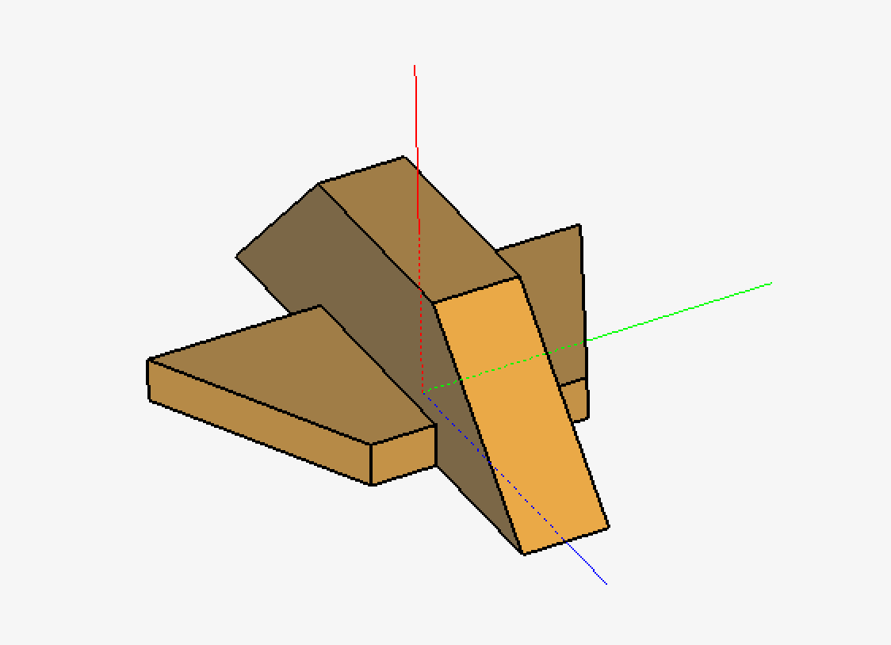 序号 1 |
 序号 2 |
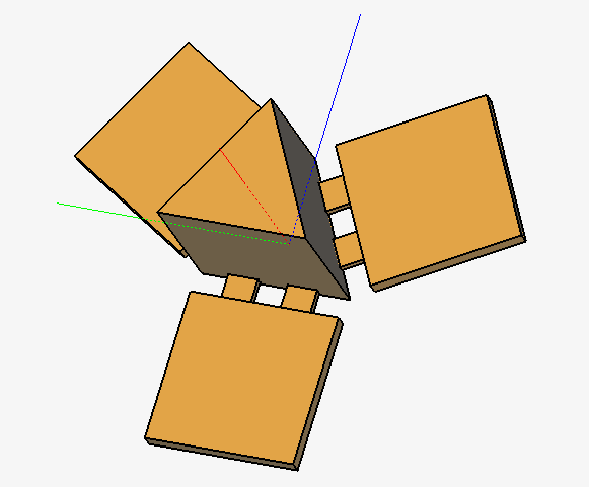 序号 3 |
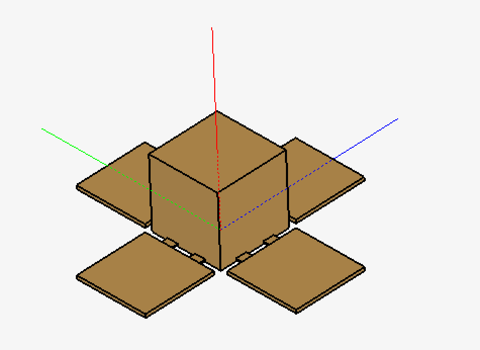 序号 4 |
 序号 5 |
 序号 6 |
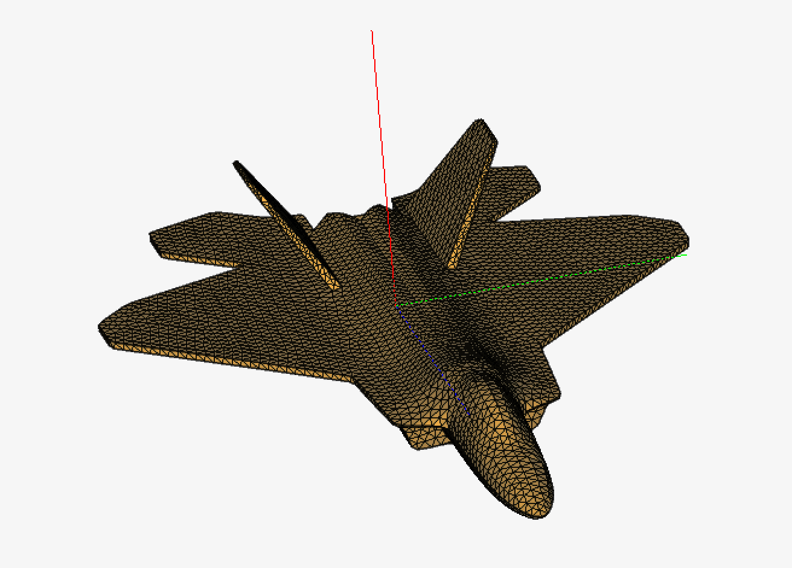 序号 7 |
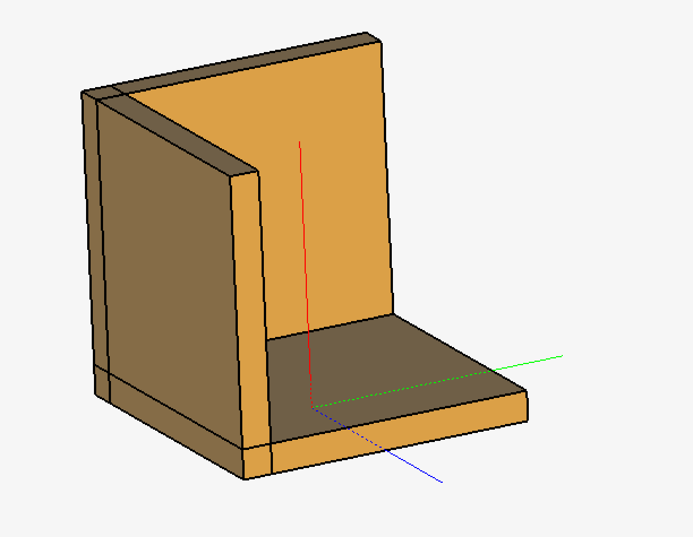 序号 8 |
 序号 9 |
可能是因为 V7comb 对原来的数据集过拟合，导致对其他模型的预测不太好；经过三个简单几何模型的迁移训练后，电流误差普遍有所改善。
3. Satellite4 的旋转与平移泛化
在 Satellite4 原模型的基础上，另外测试了一个旋转模型和两个平移模型：原版 Satellite4、旋转 $-60^\circ$ 的 Satellite4_-60、平移模型 Satellite4_u1 和 Satellite4_u2。四个模型均使用 $\theta=45^\circ$、$\phi=0^\circ:10^\circ:180^\circ$ 的 19 个方向，分别使用 V7comb 和 addTrain 参数进行预测。
| 序号 | 模型 | PO 电流误差 | V7comb 电流误差 | addTrain 电流误差 | PO RCS RMSE | V7comb RCS RMSE | addTrain RCS RMSE |
|---|---|---|---|---|---|---|---|
| 1 | Satellite4 | 62.71% | 54.09% | 43.25% | 24.47 dB | 5.91 dB | 2.71 dB |
| 2 | Satellite4_-60 | 64.23% | 68.72% | 65.07% | 17.208 dB | 7.966 dB | 5.257 dB |
| 3 | Satellite4_u1 | 62.73% | 60.43% | 49.11% | 24.471 dB | 5.628 dB | 4.532 dB |
| 4 | Satellite4_u2 | 62.72% | 69.13% | 58.10% | 24.467 dB | 8.168 dB | 5.775 dB |
模型截图（序号对应上表）
序号 1 |
 序号 2 |
 序号 3 |
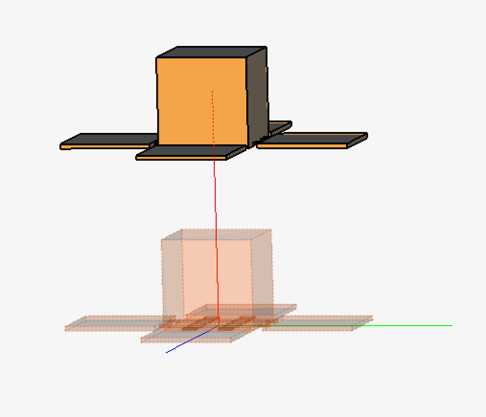 序号 4 |